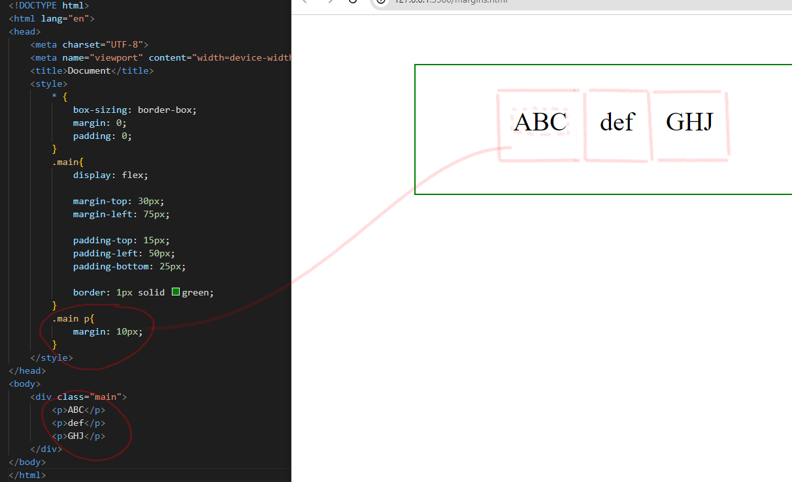

Блочная верстка (отступы)
Элемент на странце можно поставить в любое место, если задать ему отступы от границы окна.
В начале мы сбрасываем все отступы, которые были в браузере по-умолчанию, и дальше устанавливаем свои.
Для наглядности отобразим границы нашего блока свойством border: 1px solid green.
Ставим display : flex.
margin - внешний отступ от границ родительского элемента ( просто "margin" устанавливает одинаковые отступы сразу со всех четырех сторон, "margin-top" - только сверху, "-bottom" - снизу, "-left" и "-right" - слева и справа).
padding - то же самое, но отступ внутрь, от него будут отталкиваться дочерние элементы.
Добавим внутрь нашего блока еще элементов, и назначим им свои внешние отступы. Таким отбразом мы отодвинем их друг от друга.
